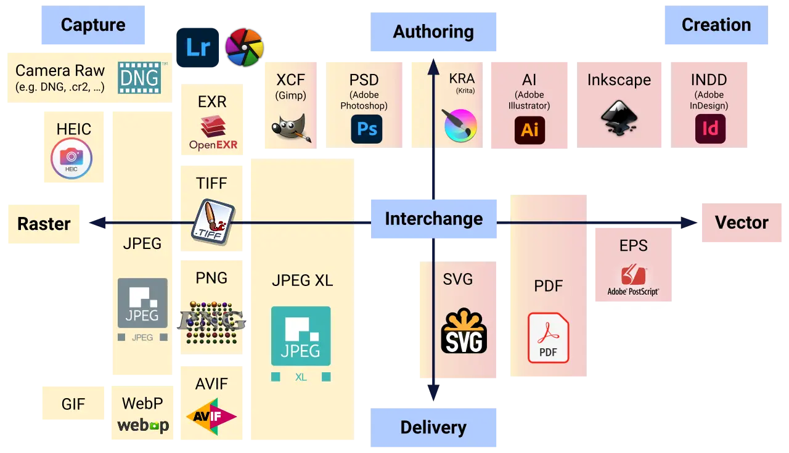

Short answer
An image format is the file type a browser fetches and draws. The right type is one that matches the picture and actually arrives.
The diagram groups formats along a path from capture and authoring toward delivery, with raster types on one side and vector types on the other. Logos of tools appear inside that educational map. They are not customer logos and not partners of this site. SEO Health does not score a page by which brand sits on the chart. It asks whether the img or the picture element points at a file that returns, with width, height, and alt.
Definition
A photograph can be a compressed raster. A flat diagram can be SVG or a raster that stays sharp enough. A format the template names but the server does not serve is a broken image, whatever the chart says is modern. Provide one format you know the page loads. Extra formats in a picture element are an enhancement only if the primary file still works. Do not pick a format because its tile on the diagram looks central.
What belongs in the page basics
Serve a format the template references, and include dimensions and alt.
Check the response of the image URL, not the presence of the format’s name in a design file. A 404 on a WebP is worse than a JPEG that loads. Width and height on the element limit layout shift. Alt describes the picture in the page’s language. The diagram can remind a team that photos and vectors are different problems. It is not a required shopping list.

What to check
- The image URL returns the file
- Width and height set on the element
- Alt in the page language
- A fallback file that exists if a newer format is also offered
- One product image request checked
A practical example
The product template points at a file ending in avif, and the server has only the jpeg. The browser shows a broken image. The repair either serves the avif or changes the src to the jpeg that exists, and sets width, height, and alt. No tool logo from the diagram is added to the page.
What this does not claim
An image format does not guarantee rankings or citations.
Where Mika Visibility files this
Mika Visibility files titles, headings, language, and media basics under SEO Health content and structure checks. They help a page be understood. They are not SEO Growth, which asks what coverage is still missing, and they are not a guarantee that an answer product will cite the page.
The map includes tool marks as part of a format diagram. They are not endorsements.
FAQ
What is an image format for a page?
An image format is the file type a browser fetches and draws. The right type is one that matches the picture and actually arrives.
What should the element include?
Serve a format the template references, and include dimensions and alt.
Does an image format guarantee rankings?
An image format does not guarantee rankings or citations.
Next step
Run a structured SEO + GEO audit to see health findings, growth gaps, and a blueprint you can act on.
Clearer entities, answers, evidence, and context make pages easier to understand and reference. Results in any answer product are not guaranteed.